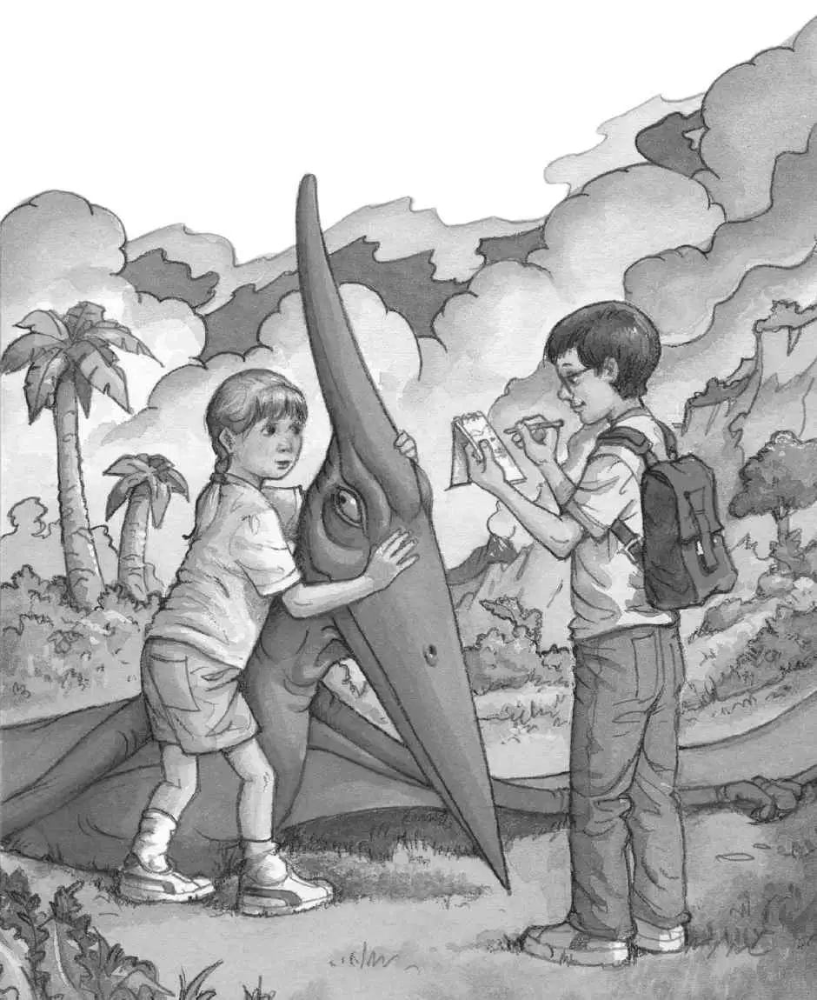
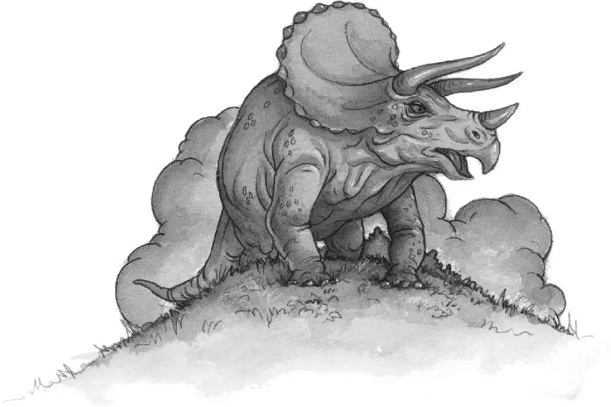

Jack gasped as Annie reached out her hand toward the Pteranodon.
Oh, no, he thought. Annie was always trying to make friends with animals, but this was going too far.
“Don’t get too close to him, Annie!” Jack shouted.
Annie touched the Pteranodon’s crest. She stroked his neck. She was talking to him.
What in the world is she saying? Jack wondered.
He took a deep breath. Okay. He would go down, too. It would be good to examine a Pteranodon. He could take notes like a scientist.
Jack started down the rope ladder. When he reached the ground, he was only a few feet away from the creature.
The Pteranodon stared at Jack. His eyes were bright and alert.
“He’s soft, Jack,” said Annie. “He feels like Henry.”
Jack snorted. “He’s no dog, Annie.”
“Feel him, Jack,” said Annie.
Jack didn’t move.
“Don’t think, Jack. Just do it,” Annie said.
Jack stepped forward. He reached out very cautiously. He brushed his hand down the creature’s neck.
Interesting, Jack thought. A thin layer of fuzz covered the Pteranodon’s skin.
“Soft, huh?” said Annie.
Jack reached into his backpack and pulled out a pencil and a notebook. He wrote:
fuzzy skin
“What are you doing?” asked Annie.
“Taking notes,” said Jack. “We’re probably the first people in the whole world to ever see a real live Pteranodon.”
Jack looked at the Pteranodon again. The bony crest on top of his head was longer than Jack’s arm.
“I wonder how smart he is,” Jack said.
“Very smart,” said Annie.
“Don’t count on it,” said Jack. “His brain’s probably no bigger than a bean.”
“No, he’s very smart. I can feel it,” said Annie. “I’m going to call him Henry.”
Jack wrote in his notebook:
small brain?

Jack looked at the creature again. “Maybe he’s a mutant,” he said.
The Pteranodon tilted his head.
Annie laughed. “He’s not a mutant, Jack.”
“Well, what’s he doing here then? Where is this place?” said Jack.
Annie leaned close to the Pteranodon. “Do you know where we are, Henry?” she asked softly.
The creature fixed his eyes on Annie. His long jaws were opening and closing like a giant pair of scissors.
“Are you trying to talk to me, Henry?” asked Annie.
“Forget it, Annie.” Jack wrote in his notebook:
mouth like scissors
“Did we come to a time long ago, Henry?” asked Annie. “Is this a place from long ago?”
Suddenly Annie gasped. “Jack!”
Jack looked up.
Annie was pointing toward the hill. On top stood a huge dinosaur!
